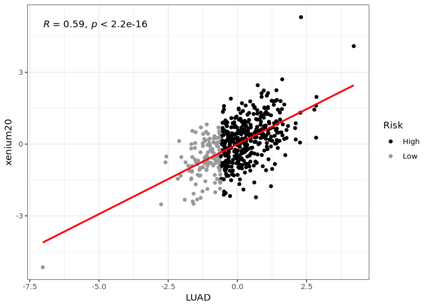
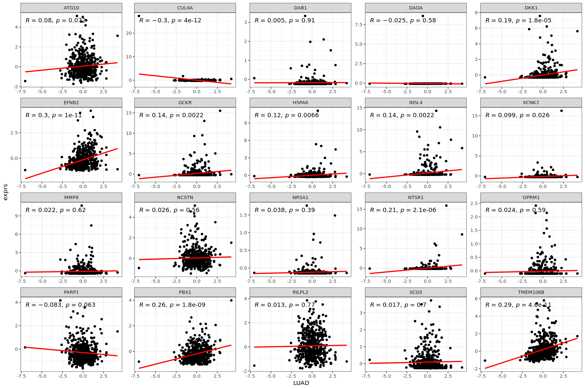
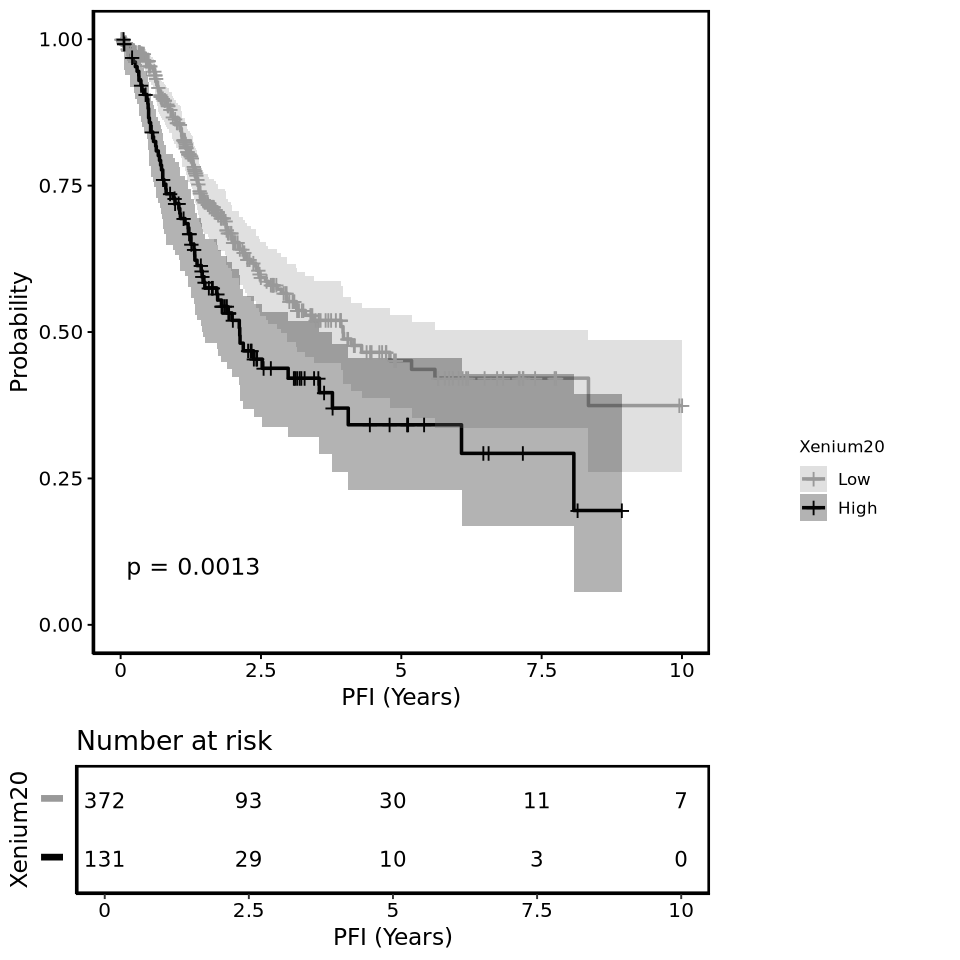

5 Validation of Xenium Genes
5.1 20 genes
- 'ATG10'
- 'CUL4A'
- 'DAB1'
- 'DAOA'
- 'DKK1'
- 'EFNB2'
- 'GCKR'
- 'HSPA6'
- 'INSL4'
- 'KCNK2'
- 'MMP8'
- 'NCSTN'
- 'NR5A1'
- 'NTSR1'
- 'OPRM1'
- 'PARP1'
- 'PBX1'
- 'RILPL2'
- 'SCG5'
- 'TMEM106B'
Code
# processed on NEMO so far
set.seed(42)
library(tidyverse)
library(SummarizedExperiment)
library(readxl)
library(glmnet)
library(survival)
setwd("/camp/home/hungm/scratch/hungm/matthew/MH_Hackathon/2025_CRUK/data/TCGA2/0_raw")
source("/camp/home/hungm/working/Matthew/library/R/functions/coxph/coxph.R")Code
gs <- list(xenium20 = xenium.genes)
write.gmt <- function(genelist, file) {
file_conn <- file(file, open = "wt")
for (set_name in names(genelist)) {
line <- c(set_name, set_name, genelist[[set_name]])
writeLines(paste(line, collapse = "\t"), file_conn)}
close(file_conn)}
write.gmt(gs, "../4_xenium/xenium20.gmt")Code
res = run_ssGSEA2(
"../1_processed/TCGA_lung_gex.gct",
output.prefix = "ssGSEA",
gene.set.databases = "../4_xenium/xenium20.gmt",
output.directory = "../4_xenium/ssGSEA_validation/",
sample.norm.type = "none",
weight = 0.75,
correl.type = "rank",
statistic = "area.under.RES",
output.score.type = "NES",
nperm = 1000,
min.overlap = 2,
extended.output = F,
global.fdr = FALSE,
log.file = "../4_xenium/ssGSEA_validation/ssGSEA.log")parsing as GCT v1.2
../1_processed/TCGA_lung_gex.gct 20501 rows, 1017 cols, 0 row descriptors, 0 col descriptors
xenium20 100 %
main loop: 33.76148
Saving file to ../4_xenium/ssGSEA_validation//signature_gct/xenium20_n1017x20.gct
Dimensions of matrix: [20x1017]
Setting precision to 4
Saved.
[1] "Total gene sets: 1"
[1] "Unique gene sets: 1"
Saving file to ../4_xenium/ssGSEA_validation//ssGSEA-scores.gct
Dimensions of matrix: [1x1017]
Setting precision to 4
Saved.
Saving file to ../4_xenium/ssGSEA_validation//ssGSEA-pvalues.gct
Dimensions of matrix: [1x1017]
Setting precision to 4
Saved.
Saving file to ../4_xenium/ssGSEA_validation//ssGSEA-fdr-pvalues.gct
Dimensions of matrix: [1x1017]
Setting precision to 4
Saved.
Saving file to ../4_xenium/ssGSEA_validation//ssGSEA-combined.gct
Dimensions of matrix: [1x1017]
Setting precision to 4
Saved.5.2 Combine ssGSEA with survival
Code
| lung | LUSC | LUAD | |
|---|---|---|---|
| TCGA-05-4244 | 8.5002 | 6.2464 | 5.3847 |
| TCGA-05-4249 | 7.4015 | 6.3764 | 5.0068 |
| TCGA-05-4250 | 8.0044 | 6.8932 | 5.9218 |
| TCGA-05-4382 | 7.6315 | 6.2107 | 5.2858 |
| TCGA-05-4384 | 8.0361 | 6.3106 | 6.1525 |
| TCGA-05-4389 | 7.8553 | 6.4251 | 5.6181 |
Code
| xenium20 | |
|---|---|
| TCGA-05-4244 | 3.9846 |
| TCGA-05-4249 | 3.5907 |
| TCGA-05-4250 | 4.1152 |
| TCGA-05-4382 | 3.8769 |
| TCGA-05-4384 | 3.9146 |
| TCGA-05-4389 | 3.8547 |
Code
| TCGA-05-4244 | TCGA-05-4249 | TCGA-05-4250 | TCGA-05-4382 | TCGA-05-4384 | |
|---|---|---|---|---|---|
| <dbl> | <dbl> | <dbl> | <dbl> | <dbl> | |
| A1BG | 26.0302 | 120.1350 | 50.8597 | 145.904 | 127.3670 |
| A1CF | 0.0000 | 0.3220 | 0.0000 | 0.000 | 0.0000 |
| A2BP1 | 1.7454 | 1.6098 | 0.0000 | 0.000 | 0.0000 |
| A2LD1 | 135.5020 | 89.0629 | 151.1330 | 112.069 | 87.5748 |
| A2M | 9844.7900 | 25712.7000 | 16943.6000 | 23326.300 | 48314.6000 |
Code
# read survival data
surv <- read.csv("../1_processed/TCGA_lung_survival.csv", row.names = 1)
colnames(surv) <- gsub("\\.", "_", colnames(surv))
# remove time < 0 or NA
surv <- surv %>% filter(!is.na(PFI_time_1))
surv$PFI_time_1 <- as.numeric(surv$PFI_time_1)/365.25
surv$PFI_1 <- as.numeric(surv$PFI_1)
# set max PFI to 10 years
surv$PFI_1 <- ifelse(surv$PFI_time_1 > 10, 0, surv$PFI_1)
surv$PFI_time_1 <- ifelse(surv$PFI_time_1 > 10, 10, surv$PFI_time_1)
surv <- surv[surv$PFI_time_1 > 0, ]
# create survival object
surv$PFI <- Surv(surv$PFI_time_1, surv$PFI_1)
surv <- cbind(surv, ssgsea[rownames(surv),])
surv <- cbind(surv, xenium20[rownames(surv),, drop = F])
# merge expression with survival data
xenium20exp <- scale(t(gex)[rownames(surv),gs[[1]]])
surv <- cbind(surv, xenium20exp)
head(surv)| type | PFI_1 | PFI_time_1 | PFI_2 | PFI_time_2 | PFS | PFS_time | DSS_cr | DSS_time_cr | DFI_cr | ⋯ | MMP8 | NCSTN | NR5A1 | NTSR1 | OPRM1 | PARP1 | PBX1 | RILPL2 | SCG5 | TMEM106B | |
|---|---|---|---|---|---|---|---|---|---|---|---|---|---|---|---|---|---|---|---|---|---|
| <chr> | <dbl> | <dbl> | <int> | <int> | <int> | <int> | <int> | <int> | <int> | ⋯ | <dbl> | <dbl> | <dbl> | <dbl> | <dbl> | <dbl> | <dbl> | <dbl> | <dbl> | <dbl> | |
| TCGA-05-4249 | LUAD | 0 | 4.1697467 | 0 | 1523 | 0 | 1523 | 0 | 1523 | NA | ⋯ | -0.08783663 | 0.4951856 | -0.14335876 | -0.10751199 | -0.1012157 | 1.0723559 | -0.6294784 | -0.06100895 | -0.25605393 | -0.19812889 |
| TCGA-05-4250 | LUAD | 0 | 0.3312799 | 0 | 121 | 1 | 121 | NA | 121 | NA | ⋯ | -0.28991267 | -0.5851363 | -0.14070875 | -0.06453740 | -0.1012157 | -0.6689259 | -0.8526004 | -0.45319223 | 1.02220044 | 0.81105108 |
| TCGA-05-4382 | LUAD | 1 | 0.9144422 | 1 | 334 | 1 | 334 | 0 | 607 | 1 | ⋯ | 0.98036290 | 2.1426275 | -0.09064977 | -0.05428312 | 0.2282981 | -0.4721944 | -0.5185958 | 0.06266203 | 0.06254723 | 1.34793936 |
| TCGA-05-4384 | LUAD | 1 | 0.5010267 | 1 | 183 | 1 | 183 | 0 | 426 | NA | ⋯ | 0.16829559 | 0.9057056 | -0.14596833 | -0.10685010 | 0.9502542 | -0.5934462 | -0.2294542 | -0.34025058 | 0.13034559 | -0.06938389 |
| TCGA-05-4389 | LUAD | 0 | 3.7481177 | 0 | 1369 | 0 | 1369 | 0 | 1369 | NA | ⋯ | -0.32039621 | 1.0763723 | -0.14799204 | -0.10914289 | -0.1012157 | -0.1040168 | -0.9009495 | 0.56662034 | 0.47124464 | 1.69444579 |
| TCGA-05-4390 | LUAD | 1 | 1.0814511 | NA | NA | 1 | 395 | 0 | 1126 | NA | ⋯ | 1.07621775 | -0.1573105 | -0.13637465 | 0.08829672 | -0.1012157 | -0.4078074 | -0.5433974 | -1.26060748 | 0.06295134 | 0.21645937 |
Loading required package: ggpp
Registered S3 methods overwritten by 'ggpp':
method from
heightDetails.titleGrob ggplot2
widthDetails.titleGrob ggplot2
Attaching package: ‘ggpp’
The following objects are masked from ‘package:ggpubr’:
as_npc, as_npcx, as_npcy
The following object is masked from ‘package:ggplot2’:
annotate
Registered S3 method overwritten by 'ggpmisc':
method from
as.character.polynomial polynom
Code
options(repr.plot.width=7, repr.plot.height=5)
surv.LUAD %>%
#filter(LUAD > -5 & LUAD < 3) %>%
#filter(xenium20 < 4) %>%
mutate(risk = ifelse(LUAD_coxph == 1, "High", "Low")) %>%
ggplot(aes(x = LUAD, y = xenium20)) +
geom_point(aes(color = risk)) +
stat_cor(method = "pearson") +
geom_smooth(method = "lm", se = FALSE, color = "red") +
scale_color_manual(values = c("black", "grey60")) +
guides(color = guide_legend(title = "Risk")) +
theme_bw()`geom_smooth()` using formula = 'y ~ x'
Code
options(repr.plot.width=15, repr.plot.height=10)
surv.LUAD %>%
select(c("LUAD", unname(gs[[1]]))) %>%
pivot_longer(cols = unname(gs[[1]]), names_to = "xenium_genes", values_to = "exprs") %>%
mutate(
LUAD = as.numeric(LUAD),
exprs = as.numeric(exprs)) %>%
ggplot(aes(x = LUAD, y = exprs)) +
facet_wrap(~xenium_genes, scales = "free") +
geom_point() +
stat_cor(method = "pearson") +
geom_smooth(method = "lm", se = FALSE, color = "red") +
theme_bw() `geom_smooth()` using formula = 'y ~ x'
Code
find_coxph_cutoff <- function(df, column, survival, set_cutoff = NULL, covariates = NULL, interquartile = T){
#split data at 200 intervals and find the cutoff with most significant difference in survival
if(length(covariates) > 0){
covariates_coxph <- paste0(" + ", paste0(covariates, collapse = " + "))
print(paste0("set covariates ===> ", covariates_coxph))}
else{
covariates_coxph <- ""}
cutoff <- NULL
if(interquartile){
lower <- quantile(df[[column]])[[2]]
upper <- quantile(df[[column]])[[4]]}
else{
lower <- min(df[[column]])
upper <- max(df[[column]])}
no <- nrow(df)
for (split in seq(lower, upper, length.out = 200)) {
df[["coxph"]] <- ifelse(df[[column]] > split, "High", "Low")
df[["coxph"]] <- factor(df[["coxph"]], levels = c("Low", "High"))
remove <- any(table(df$coxph) < no / 20)
if (remove) {
next
}
surv.cox <- coxph(as.formula(paste0(survival, " ~ coxph", covariates_coxph)), data = df)
# Extract HR and p-value
hr <- round(exp(coef(surv.cox))[1], 3) # Hazard Ratio
logr <- round(summary(surv.cox)$coefficients[1, "Pr(>|z|)"], 3) # p-value
cutoff <- rbind(cutoff, c(split, hr, logr))
colnames(cutoff) <- c("cutoff", "HR", "logr")
}
# use most significant cutoff to split data in "High" & "Low" groups
cutoff <- as.data.frame(cutoff) %>% arrange(logr)
if(length(set_cutoff) == 0){
threshold <- cutoff$cutoff[1]}
else if(length(set_cutoff) == 1){
threshold <- set_cutoff}
else{
error("set_cutoff should be set to length of 1")}
print(paste0("for <", column, ">, cutoff is set at ===> ", threshold))
df[[paste0(column, "_coxph")]] <- ifelse(df[[column]] > paste0(threshold), "High", "Low")
df[[paste0(column, "_coxph")]] <- factor(df[[paste0(column, "_coxph")]], levels=c("Low", "High"))
df$coxph <- NULL
return(df)
}Code
[1] "for <xenium20>, cutoff is set at ===> 0.561976140789476"Code
options(repr.plot.width=8, repr.plot.height=8)
plot_survival <- function(df, column, survival, palette = NULL, ...){
if(!(column %in% colnames(df))){
message(paste0("<", column, "> not found in dataframe. Skipped"))
next}
suppressMessages({
b <- as.formula(paste0(survival, "~", column))
fit <- eval(substitute(survfit(b, data = df, conf.type = "log-log"), list(b = b)))
if(length(names(fit$strata)) > 1){
names(fit$strata) <- gsub(".*=", "", names(fit$strata))
kmplot <- ggsurvplot(
fit,
data = df,
palette = palette,
risk.table = T,
pval = T,
risk.table.y.text.col = T,
risk.table.y.text = F,
legend = "right",
...)
}
else{
kmplot <- NULL
}})
kmplot[[1]] <- kmplot[[1]] + theme(panel.border = element_rect(colour = "black", fill=NA, size=1.5))
kmplot[[2]] <- kmplot[[2]] + theme(panel.border = element_rect(colour = "black", fill=NA, size=1.5))
return(kmplot)}
p <- plot_survival(surv.LUAD, column = "xenium20_coxph", legend.title = "Xenium20", survival = "PFI", palette = c("grey60", "grey1"), conf.int = T, ylim = c(0, 1), ylab = "Probability", xlab = "PFI (Years)", pval.coord = c(0.1, 0.1))
p